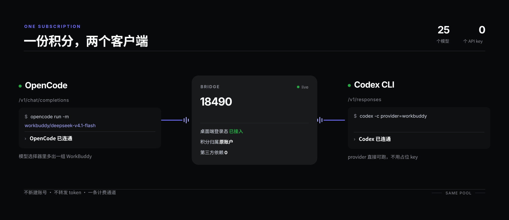

Windows · 本机回环 · 无需 API key
装一次，两个客户端各自拿到一组模型。积分仍然只从你已经在付的那份订阅扣， 不新建账号，不填 key，不上传 token。
架构
没有中转服务器，没有第二个账号。请求从本机回环进，从桌面端原本的计费通道出。

鉴权由桌面端的登录态承担。仓库里不含任何密钥，也没有任何一处需要你去复制粘贴 token。
OpenCode、Cursor、任意 SDK 走
/v1/chat/completions；Codex CLI 走
/v1/responses，原生支持，不用降级。
写 opencode.json 和
config.toml 之前先备份，只动自己那几行，其它 provider
和默认模型原样保留。
桌面端关掉了会按需拉起并等待重连。桥接进程挂了，计划任务会把它重新起来。
证据
下面两段是这台机器上的真实输出。smoke.py
会挑倍率最低的模型， 把两种协议各打一次，打印耗时和 token 数。
PS> python smoke.py [ok] default chat/hy4free 1.9s, 'OK', 68 tokens [ok] default responses/hy4free 2.3s, 'OK' SMOKE OK - both protocols answered with a real model call
PS> python doctor.py WorkBuddy Bridge - doctor 1. installation [PASS] desktop install found D:\wb\WorkBuddy [PASS] bundled WBIPC client lib [PASS] WorkBuddy.exe found 2. targets [PASS] default: pipe handshake [PASS] default: port 18490 listening [PASS] default: /health wbipc=True models=22 [PASS] default: /v1/models 25 models ALL GOOD - point your client at http://127.0.0.1:18490/v1
第三方依赖：0 个。pip install 一个包都不用，全部标准库。
诚实的限制
买之前先看清楚。这些都不会被"后续版本"改掉，因为它们来自管道本身。
E_PAYLOAD_TOO_LARGE。本项目不提供修改安装包绕过它的方案。
本项目通过非官方入口（桌面端自带的 IPC 客户端）复用你的订阅额度。WorkBuddy 的用户协议可能不认可"用第三方客户端消耗订阅积分"。
厂商可能随时改协议、改管道、封禁账号。这就是一个个人自用的便利工具，不承诺长期可用，也不承诺不违反服务条款。商用、对外提供服务、代他人调用，风险更高。
本项目与 WorkBuddy
官方无关，未获其认可或授权。名称仅用于说明兼容对象。默认只监听
127.0.0.1，请保持默认。